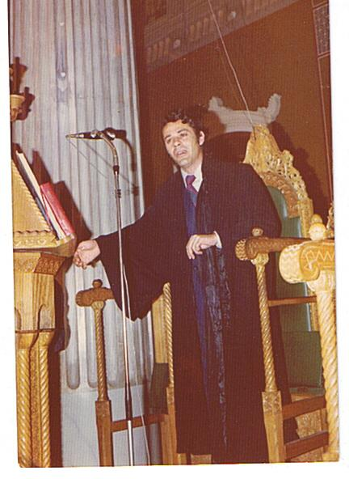
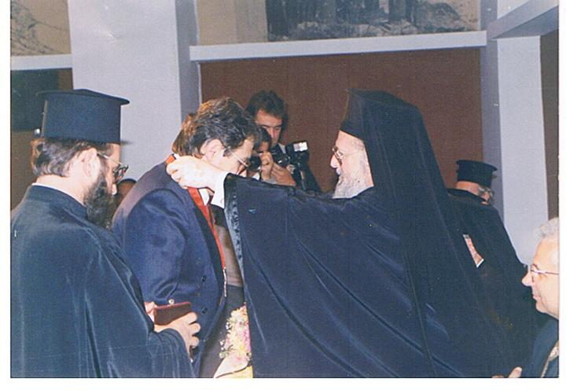
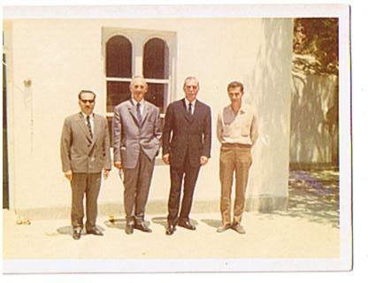
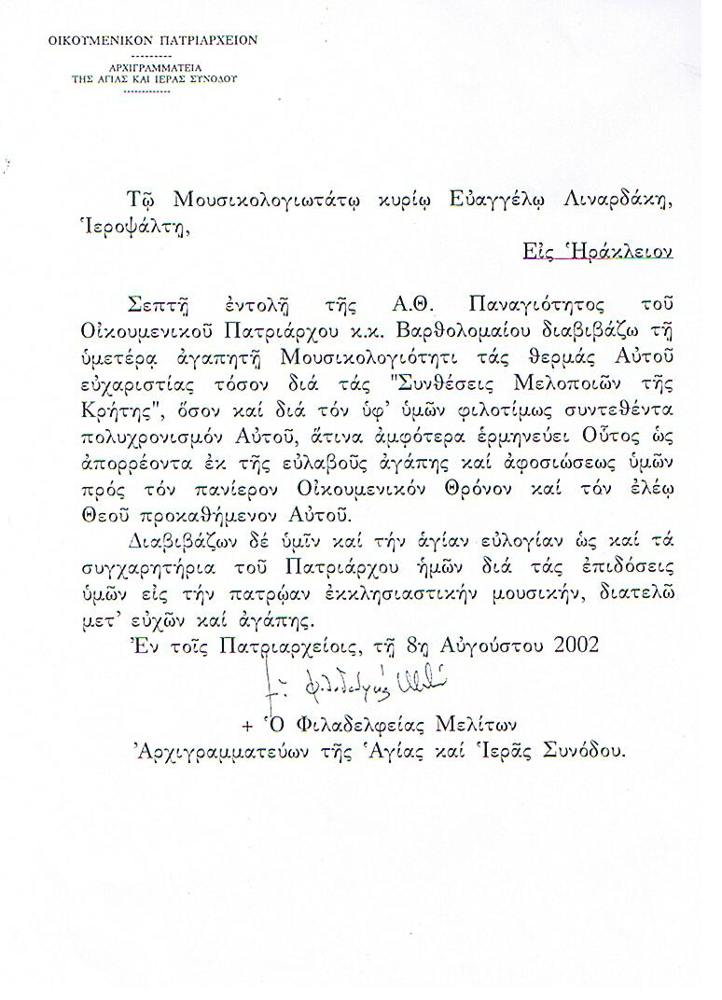
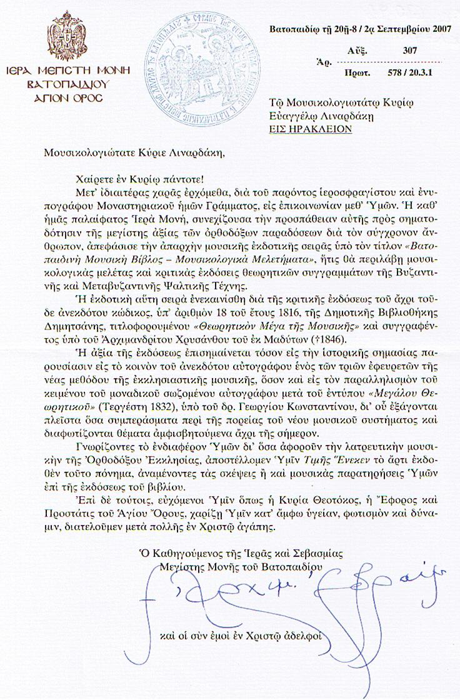

Ευάγγελος Λιναρδάκης / Vangelis Linardakis
Πρωτοψάλτης I.N. Αγ. Βαρβάρας Ηρακλείου Κρήτης (1943 - 2010) / Protopsaltis of St. Barbara, Heracleion,
Crete (1943 - 2010)

Στο δεξιό αναλόγιο του Αγίου Μηνά Ηρακλείου Κρήτης (κλίκ για κανονικό μέγεθος)
Βιογραφικά / Biographical
Γεννήθηκε το 1943 (Βούτες Μαλεβιζίου του νομού Ηρακλείου) και ήλθε στο Ηράκλειο
σε ηλικία 4 ετών. Άρχισε την ψαλτική του σταδιοδρομία σε ηλικία 7 ετών στον Ιερό
Μητροπολιτικό Ναό Του Αγίου Μηνά Ηρακλείου Κρήτης. Έχει ψάλλει σε διάφρους ναούς
του Ηρακλείου και από το 1980 έως σήμερα, ψάλλει στον Ιερό Ναό Αγίας Βαρβάρας Ηρακλείου.
Ο Ευάγγελος Λιναρδάκης διατέλεσε μαθητής κυρίως του Άρχοντα Πρωτοψάλτη Ιωάννη Βουτσινά,
γιού του Δημητρίου Βουτσινά, ενός από τους δασκάλους του Θρασυβούλου Στανίτσα (είχαν
μελετήσει μαζί).
Έχει ψάλλει προσκληθείς σε πολλές πανηγύρεις ναών της περιοχής του Ηρακλείου.
Είναι ιδρυτικό μέλος του Σωματείου Ιεροψαλτών Νομού Ηρακλείου ΑΝΔΡΕΑΣ Ο ΚΡΗΤΗΣ (4
Ιουλίου), του οποίου εχρημάτισε πρόεδρος για 12 χρόνια.
Είναι ιδρυτικό μέλος (υπεύθυνος ισοκρατημάτων) της Βυζαντινής Χορωδίας του Δήμου
Ηρακλείου η οποία έχει πραγματοποιήσει πάρα πολλές εμφανίσεις εντός (και στο Μέγαρο
Μουσικής Αθηνών) και εκτός Ελλάδος.
Έχει γράψει πολυάριθμες συνθέσεις (Ανοιξαντάρια - Οκτάηχο Μακάριος Ανήρ - Δοξαστικά
- Εωθινά - Δοξολογίες (αργές και σύντομες) - Τρισάγια και Δύναμις σε όλους τους
ήχους (αλλά και σε Πρωτόβαρυ - Δευτερόπρωτο - Εναρμόνιο κλπ.) - Χερουβικά, Λειτουργικά,
Άξιον Εστίν, σε όλους τους ήχους (και σε διάφορους μικτούς)- Επί Σοί Χαίρει(διάφορα)
και πολλά άλλα, κυρίως στο ύφος του δασκάλου του Ιωάννη Βουτσινά και του Θρασυβούλου
Στανίτσα, τις οποίες ελπίζει να δημοσιεύσει μια ημέρα.
Έχει στη διάθεσή του πολλές παλαιές και πολύτιμες ηχογραφήσεις, των οποίων μερικές
είναι μοναδικές - για παράδειγμα, ηχογραφήσεις Στανίτσα κατά τη διάρκεια της επίσκεψής
του στην Κρήτη.
Μαζί με το Μανώλη Σουργιαδάκη (πρωτοψάλτη και καθηγητή της Βυζαντινής Μουσικής),
επιμελούνται και παρουσιάζουν τις εκπομπές : "Ψαλτικής Απανθίσματα", και "Ορθόδοξη
Εκκλησιαστική Μουσική Παράδοση" κάθε Σάββατο και Κυριακή 20.00'(ώρα Ελλάδος). Ακουστική
σύνδεση «99.7 FM» ή στο Ίντερνετ στη διεύθυνση :
www.iak.gr.
Στις 11 Νοεμβρίου 1992 (εορτή του Αγ. Μηνά) του απενεμήθη ο Πατριαρχικός Σταυρός
για το έργο του.
Κοιμήθηκε μετά από ολιγόμηνη ασθένεια το Νοέμβριο του 2010.

Απονομή Πατριαρχικού Σταυρού 11-11-1992 (εορτή του Αγιου Μηνα) (κλίκ για κανονικό
μέγεθος)
Evangelos Linardakis was born in 1943 in Boutes of Malebiziou in the province of
Herakleion in Crete and went to the city of Herakleion at the age of 4. He started
his psaltic studies at the age of 7 in the Metropolitan Cathedral of St. Menas of
that city. His main music teacher was Ioannis Boutsinas, Archon Prtopsaltis of the
Archdiocese of Constantinople, son of one of Thrasyvoulos Stanitsas' teachers, Dimitrios
Boutsinas. Evangelos Linardakis has chanted in many churches of Herakleion and as
of 1980 he is a chanter at St. Barbara's church in Herakleion. On numerous occasions
he has been invited to panygeria of various churches in Herakleion. He is a founding
member and has served as chairman for over 12 years of the Chanter Association of
the province of Herakleion, "St. Andreas of Crete". At the same time he was a founding
member of the Byzantine Choir of the City of Heracleion [
html] (which was established under the directorship of the late Professor Georgios Amargianakis)
and served as the head of ison-holders in the choir. Together with the choir he
has participated in numerous concerts both in and outside Greece. He also actively
participated in the choir of Cretan psaltai who recorded hymns from Cretan composers
[
html] under the direction of Ioannis Tserevelakis.
Evangelos Linardakis is a prolific composer and has written numerous compositions,
mainly in the style of his teacher and that of Thrasyboulos Stanitsas, which he
hopes to publish one day. These include: Anoixandaria, octamodal Makarios Anir,
Doxastika, Eothina, Doxologies (brief and long versions), Trisagia and Dynamis in
all modes (as well as in Protobarys, Deuteroporotos, Enarmonios etc), Cheroubika,
Leitourgika, "Axion Estin" in all modes (as well as mixed modes), "Epi Soi Chairei" (in various modes) and many more. See below for examples of his compositions. With
the help of Emmanuel Sourgiadakis (protopsaltis and teacher of Psaltiki) every Saturday
and Sunday at 20:00 Greek time (18:00 GMT) he hosts two radio programmes on the
radio of the Archdiocese of Crete [
html].
The shows are called respectively "Psaltikis Apanthismata" and ""Orthodoxos Ecclesiastiki
Mousiki Paradosi". See below for more information and how to listen to past shows.
Evangelos slept in the Lord after a short fight with cancer in November 2010.

Με το Θρασύβουλο Στανίτσα και το Δημήτριο Μαγούρη στις 16/5/1970 (κλίκ για κανονικό
μέγεθος).
Ραδιοφωνικές Εκπομπές / Radio Broadcasts
Αρχείο / Archive [
html]
(from analogion.net of P. Papadimitriou).
Συνθέσεις / Compositions
Συνθέσεις του Βαγγέλη Λιναρδάκη / Compositions of Vangelis Linardakis [
html]
(from ieropsaltis.com of Dimitri Houpas).
Ηχογραφήσεις / Recordings
For lots of recordings and original compositions of Evangelos Linardakis see psaltologion.com
Ραδιοφωνική εκπομπή "Αινείτε" της κ. Αρριέτας Παλιατσάρα στις 19-8-2006 στο 3ο Πρόγραμμα
της Ελληνικής Ραδιοφωνίας, αφιέρωμένη στο Βαγγέλη Λιναρδάκη. / Radio show from 19-8-2006
(in Greek) dedicated to Vangelis Linardakis [
zip, 17 Mb]
Οι παρακάτω ηχογραφήσεις είναι ζωντανές και χωρίς επεξεργασία και προσεφέρθησαν
από τον ίδιο τον κ. Λιναρδάκη.
The recordings below were recorded live, they are unprocessed and they were offered
by Vangelis Linardakis.
Τα παρακάτω είναι από την 5η Κυριακή Νηστειών 17/4/2005 / Τhe following recordings
are from 17/4/2005 (5th Sunday of Lent)
01. Τον Συνάναρχον Λόγον / Ton Synanarchon Logon / [
mp3, 0.8 Mb]
02. Τρισάγιον (Πλάγιος του Πρώτου) σύνθεση Β. Λιναρδάκη / Trisagion, Plagal First
Mode (composed by V. Linardakis) [
mp3, 2.5 Mb]
03. Χερουβικόν (Πλάγιος του Πρώτου, χορωδιακόν) σύνθεση Β. Λιναρδάκη / Cherouvikon,
Plagal First Mode (composed by V. Linardakis) [
mp3, 3.1 Mb]
04. Ταις Αγγελικαίς (ψάλλει ο Γιάννης Στρατάκης) και Λειτουργικά (Πλάγιος του Πρώτου)
σύνθεση Β. Λιναρδάκη / Tais Aggelikais (chanted by Giannis Stratakis), Leitourgika,
Plagal First Mode (composed by V. Linardakis) [
mp3, 4.2 Mb]
Τα παρακάτω είναι από την Κυριακή του Τυφλού 16/5/2004 / Τhe following recordings
are from the Sunday of the Blind Man 16/5/2004
06. Λειτουργικά Μ. Βασιλείου, (Πλάγιος του Πρώτου) σύνθεση Γ. Τσατσαρώνη / Leitourgika
of the Liturgy of St Basil, Plagal First Mode (composed by Georgios Tsatsaronis)
[
mp3, 2.9 Mb]
07. Επί Σοί Χαίρει (Πλάγιος του Πρώτου) σύνθεση Β. Λιναρδάκη / Epi Soi Hairei, Plagal
First Mode (composed by V. Linardakis) [
mp3, 1.9 Mb]
08. "Σαρκί Υπνώσας" (Πλάγιος του Πρώτου), Πασαπνοάρια, Αίνοι, Δόξα "Τίς Λαλήσει" (σύνθεση Β. Λιναρδάκη), Δοξολογία Πά'-Πα (σύνθεση Β. Λιναρδάκη) Σχόλια του κ. Λιναρδάκη
"...το εξαποστειλάριον και τα στιχηρά του Πασχα (τα λέω στιχηραρικά) ειναι αυτοσχεδιασμός
της στιγμής . Συνήθως τα λέω έτσι την Κυριακή του Τυφλού (οπως και τα τράκ 6 και
7) . Πάντως υπάρχουν γραμμένα παρόμοια στο ''Πεντηκοστάριον'' του Γ. Σύρκα". / Exaposteilarion,
Pasapnoaria, Ainoi, Doxology, Plagal First Mode (composed by V. Linardakis) [
mp3, 8.9 Mb]
Τα παρακάτω είναι από την Κυριακή του Τυφλού 1/6/2003 / Τhe following recordings
are from the Sunday of the Blind Man, 1/6/2003
09. Στιχηρά Πάσχα (ειρμολογικά), Δοξολογία Πλάγιος του Πρώτου (Κε-κε) / Stichera
of Pascha, Doxology, Plagal First Mode (composed by V. Linardakis) [
mp3, 3.8 Mb]
10. Τον Ήλιον Κρύψαντα (Πλάγιος του Πρώτου) σύνθεση Β. Λιναρδάκη / Ton Ilion Krypsanta,
Plagal First Mode (composed by V. Linardakis) [
mp3, 4.9 Mb]
Τα παρακάτω είναι από τις 3/11/2003 στον Αγ. Γεώργιο Πόρου Ηρακλείου / Τhe following
recordings are from 3/11/1977 from St. George, Poros, Heracleion, Crete
11. Λειτουργικά (Δευτερόπρωτος "Καρτσιγάρ", σύνθεση Β. Λιναρδάκη), Άξιον Εστίν Π.
Φιλανθίδου / Leitourgika ("Defteroprotos - Karcigar" Mode) composed by V. Linardakis,
Axion Estin of Petros Filanthidis [
mp3, 2.7 Mb]
Τιμητικές Επιστολές / Honourary Letters

Επιστολή από το Οικουμενικό Πατριαρχείο (κλίκ για κανονικό μέγεθος)

Επιστολή από την Ι. Μ. Μ. Βατοπεδίου Αγ. Όρους (κλίκ για κανονικό μέγεθος)
{kind=link}
{kind=link}
{kind=link}
{kind=link}
{kind=link}